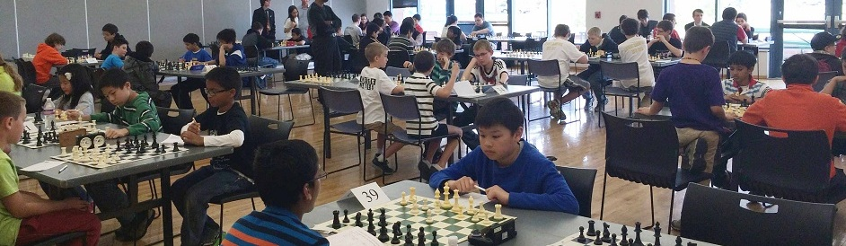
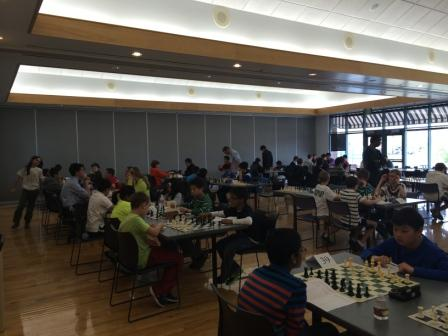

Colorado Scholastic Team Chess Championship
2014 Colorado Scholastic Team Chess Championship
Inauguration of the Colorado Scholastic Team Chess Championship
14 teams with total of 73 students from various regions of Colorado including Boulder, Denver, Colorado Springs, Fort Collins and Brighton, competed in our first Colorado State Scholastic Team Chess Championship tournament at the beautiful Brighton Recreation Center on May 3rd, 2014.
This is a one-day, invitation only tournament. USCF and CSCA memberships are required. More information about the tournament is posted on the about page.
The following teams participated in this tournament:
- High Schools: Fossil Ridge, Monarch, Regis Jesuit and Rangeview
- Middle Schools: Overland Trail, Goddard, Lafayette, Kinard, Challenge and Lesher
- Elementary Schools: Ridgeview, Trout, AIES and Peak to Peak
This tournament became the first rated tournament for over 30 scholastic players. Some of them went to the Class Championships in Greeley a couple weeks after the state championship. Hopefully many of these newcomers become the new blood of Colorado chess and will start to participate in future local and state tournaments.
Acknowledgements
This tournament was made possible from the following contributions:
- Regional coordinators: Michael Mulyar, Tom Nelson, Lee Simons, Jesse Cohen and Zach Bekkedahl, for their support and hours of time spent to help the tournament.
- Other helpers: Lawrence Beshear from Lafayette, Duwayne Langseth and Lucy Westenburg from CO Springs, Anne Marie Yanez, Alyssa Nauman and Mark Luce from Fort Collins, and Stephen Goettsche from Boulder.
- Special thanks go to the tournament's Brighton host Jered Severt and Marianne Mansfield, who provided the free and spacious rooms at the wonderful Brighton recreation center for the tournament.
- Finally, the ultimate success of the tournament goes to all of players and parents for their support of this tournament. It was truly a statewide team effort that made this tournament possible and successful.
If you have any suggestions or guidance on how to improve this tournament in the future, please, let Jackson or Zach know. Jackson's email address is jackson@chenjackson.com, and Zach's email address is info@chessmatesfc.com. They would really appreciate it. They hope to see you all again next year.
Winners from the 1st Colorado Scholastic Team Chess Championship
| Elementary School | Middle School | High School | |
|---|---|---|---|
| First | Academy International Elementary School | Kinard Middle School | Regis Jesuit High School |
| Second | Ridgeview Elementary School | Lesher Middle School | Monarch High School |
The full standings are on the standings page.
Photos from the tournament
